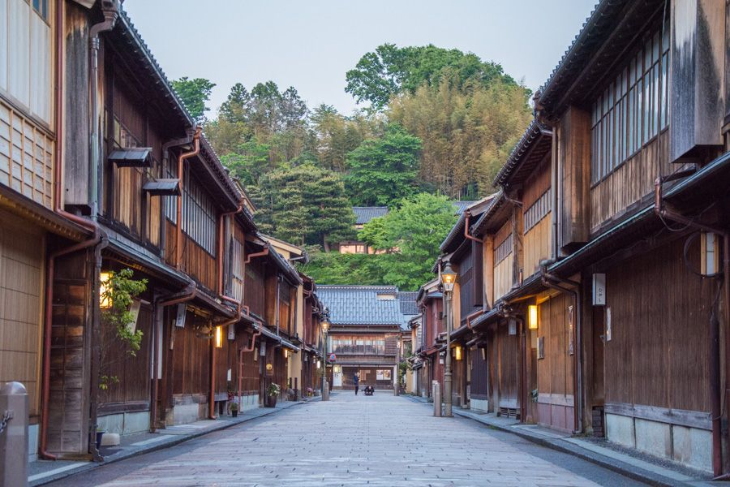

Kanazawa
Kanazawa est la capitale de la préfecture d'Ishikawa, située au bord de la mer du Japon non loin des Alpes japonaises. La vieille ville, qui se développe autour du parc du château et du célèbre jardin Kenrokuen, témoigne du savoir-faire traditionnel japonais en matière d'artisanat d'art et d'architecture féodale.
Avec ses quelques 465.000 habitants, Kanazawa est connue pour un trio d'attractions touristiques rassemblées dans un mouchoir de poche: le jardin japonais Kenroku-en (l'un des trois plus beaux du Japon), le Musée d'Art Contemporain du 21ème siècle, et le château de la ville.
La ville, avec sa connotation artistique, est jumelée avec Nancy (haut lieu de l'art nouveau) depuis 1973.
Takayama Ukon (1552 - 1615), également connu sous les noms de Hikogoro Shigetomo ou Justo (de son nom latin), est un seigneur daimyo converti au christianisme, persécuté pour sa foi et qui trouve refuge dans la province de Kaga (sud de la future Ishikawa). Il est béatifié en 2017 par le Vatican à Osaka en tant que martyr catholique japonais.
Ce chrétien catholique, kirishitan en japonais, est baptisé dès l'âge de 12 ans par le père Dario. Takayama Ukon entame ensuite une carrière militaire ponctuée de plusieurs succès ainsi qu'une évangélisation de la population locale. Son influence est stoppée nette en 1587, lorsque Toyotomi Hideyoshi accède au pouvoir et s'oppose fermement au christianisme.
Déchu de ses biens et de ses pouvoirs, Ukon part se réfugier à Kanazawa, où il gagne la protection du puissant clan de Maeda Toshiie. Pendant les 27 années qu'il passe dans la région et grâce notamment à ses talents d'architecte, il participe à la conception des châteaux de Takaoka et de Kanazawa. Il continue également d'œuvrer pour ses croyances, comme en témoigne l’église catholique de Kanazawa et la Cathédrale du Saint-Esprit, deux monuments que l'on peut toujours visiter dans le centre-ville.